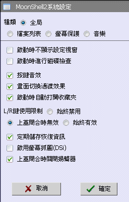
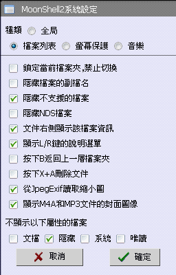
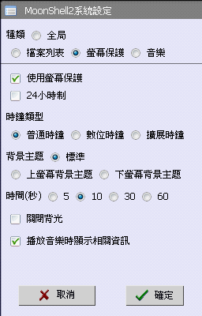
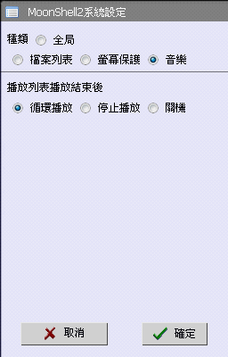
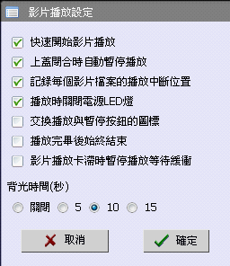
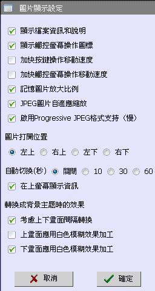
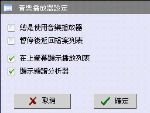
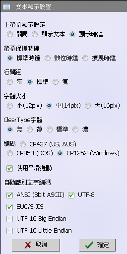

・啟動時不顯示設定視窗
・啟動時進行磁碟檢查
沒有特別理由的時候請別避開檢查
為安全起見、推薦經常檢查。
・按鍵音效
・畫面切換過渡效果
・啟動時自動打開收藏夾
啟動自製軟體收藏夾，以方便使用MoonShell2啟動自製軟體。
・L/R鍵使用限制
始終禁用, 上蓋閉合時無效, 始終有效
・定期儲存恢復資訊
此恢復資訊記錄音樂，圖片，文字文件最後打開時的狀態。
・啟用螢幕抓圖(DSi)
DSi需要使用到SELECT鍵來改變亮度。需要使用螢幕抓圖功能時請檢查這個選項。
・上蓋閉合時關閉揚聲器
耳機輸出一直有效、可以防止放在口袋時勿拔出耳機插頭時揚聲器發出聲音。

・鎖定當前檔案夾，禁止切換
・隱藏檔案的副檔名
・隱藏不支援的檔案
不顯示AVI和EXE等不支持的檔案。
WMA和JPG等支持的格式（可以顯示在檔案列表選單）也可能因為內部格式不支持而不能打開。
・隱藏NDS檔案
・文件右側顯示該檔案資訊
MP3,JPG,BMP,PSD,DPG 等顯示檔案資訊（播放時長，分辨率等）。
・顯示L/R鍵的說明選單
長按L/R鍵顯示說明選單。
・按下B返回上一層資料夾
預設為關閉音樂。
此功能有效時，可以使用R鍵連按三次關閉音樂。
・按下X+A刪除文件
切換START鍵的刪除對話框顯示的確認按鍵。預設為L+R+A鍵刪除。
・從JpegExif讀取縮圖
・顯示M4A和MP3文件的封面圖像
・不顯示以下屬性的檔案
文檔, 隱藏, 系統, 唯讀

・使用螢幕保護
・24小時制
・時鐘類型
普通時鐘, 數位時鐘, 擴展時鐘
・背景主題
標準, 上螢幕背景主題, 下螢幕背景主題
・時間(秒)
5, 10, 30, 60
・關閉背光
・播放音樂時顯示相關資訊

・播放列表播放結束後
循環播放, 停止播放, 關機

・快速開始影片播放
加速開始檢查、高質量的DPG檔案可能會導致丟幀。
・上蓋閉合時自動暫停播放
・記錄每個影片檔案的播放中斷位置
・播放時關閉電源LED燈
・交換播放與暫停按鈕的圖標
切換看到的圖示。對於功能沒有影響。
・播放完畢後始終結束
無視播放模式（順序播放、循環播放等）始終在播放完成後返回主介面。
・影片播放卡滯時暫停播放等待緩衝
・背光時間(秒)
Off, 5, 10, 15

・顯示檔案資訊和說明
・顯示觸控螢幕操作圖標
・加快按鍵操作移動速度
・加快觸控螢幕操作移動速度
・記憶圖片放大比例
・JPEG圖片自適應縮放
・啟用Progressive JPEG格式支持（慢）
Progressive Jpeg格式檔案解碼十分緩慢、讀取途中無法取消讀取。
・圖片打開位置
左上, 右上, 左下, 右下
・自動切換（秒）
Off, 10, 30, 60
・在上螢幕顯示資訊
・轉換成背景主題時的效果
瀏覽圖片時按下START鍵將圖片轉換為背景主題的設定選項。
・考慮上下畫面間隔轉換
・上畫面應用白色模糊效果加工
・下畫面應用白色模糊效果加工

・總是使用音樂播放器
檔案列表選單下按下A鍵播放音樂的同時打開音樂播放器。
・暫停後返回檔案列表
・在上螢幕顯示播放列表
・顯示頻譜分析器
播放高負載的音樂檔案（MIDI，WMA）可能會造成走音。

・上螢幕顯示設定
關閉, 顯示文本, 顯示時鐘
・螢幕保護時鐘
標準時鐘, 數位時鐘, 擴展時鐘
・行間距
窄, 標準, 寬
・字體大小
小(12pix), 中(14pix), 大(16pix)
・ClearType字體
無, 薄, 標準, 濃
舊版DS和DSL中間批次的NDS無法正常顯示。
尚未確認DSi是否有此問題。
像素格式的調整不正確、文字變得模糊不清。
・編碼
CP437 (US, AUS), CP850 (DOS), CP1252 (Windows)
這裡是使用ANSI編碼時的選項。
・使用平滑捲動
・自動識別文字編碼
請選擇你想自動識別的文字文件格式 。